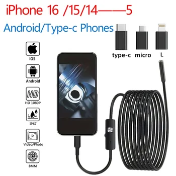

In a world where precision and detailed inspection are paramount, having the right tools can make all the difference. Whether you're a professional technician, an avid DIY enthusiast, or simply someone who needs to peek into hard-to-reach areas, the HD1920P Endoscope Inspection Camera offers a reliable and high-performance solution. This mini, Type-C compatible inspection camera is engineered to bring clarity to the unseen, providing real-time visual feedback directly on your mobile device.
Gone are the days of struggling to view confined spaces. This advanced endoscope camera transforms your smartphone or tablet into a powerful inspection device, capable of capturing high-definition images and videos. Designed for ease of use and broad compatibility, it stands out as an indispensable tool for a multitude of inspection tasks.
Unveiling the HD1920P Endoscope Inspection Camera
The HD1920P Endoscope Inspection Camera is a state-of-the-art gadget designed for detailed visual inspections. With a robust build and intelligent features, it is built to withstand challenging environments while delivering clear, actionable insights.
Crystal-Clear Vision in Any Environment
At the core of this endoscope camera is a high-resolution 2.0 Megapixels CMOS sensor, capable of capturing stunning HD 1920*1080 resolution images and videos at a smooth 30 frames per second. This ensures that every detail, no matter how small, is rendered with exceptional clarity. The visual fidelity is further enhanced by its 70-degree view angle, allowing for a broad perspective within cramped spaces.
One of the most critical aspects of any inspection camera is its ability to perform in low-light or completely dark conditions. This endoscope camera addresses this challenge with 8 adjustable white LEDs. These bright lights can be controlled to provide the optimal level of illumination, ensuring that you obtain clear picture information even in the most poorly lit environments. For best results, the optimal observing distance is between 3 to 10 cm (1.2 to 3.93 inches), making it perfect for close-up detailed examinations.
Seamless Connectivity Across Devices
A significant advantage of this endoscope camera is its direct plug-and-play functionality. Unlike many other inspection cameras that require a separate WiFi box, this model connects directly to your mobile device. This means a simpler setup and a more reliable connection for real-time viewing.
To get started, users simply need to install the 'Useeplus' application, which is readily available for download from the App Store and Google Play Store. Once the app is installed, plug the endoscope camera into your iOS or Android mobile device, and you're ready to view live images on your screen. This straightforward process ensures that you can begin your inspections quickly and efficiently.
The camera supports both photo taking (JPEG format) and video recording (MP4 format) directly on your mobile phone, allowing you to document your findings effortlessly.
Built for Durability and Versatility
Durability is key for an inspection tool that needs to operate in harsh conditions. The camera probe diameter is a compact 8mm, allowing it to fit into narrow openings. The cable itself is available in multiple lengths: 1m, 3m, 5m, or 10m, providing flexibility for various inspection depths. The hard cable design ensures it maintains its shape, making it easier to maneuver through intricate pathways.
A critical feature for many applications is its IP67 waterproof level, specifically for the camera lens. This rating ensures the lens can withstand immersion in water, making it perfect for underwater inspections or examining damp pipes without fear of damage. The robust design is built to perform in temperatures ranging from 32 to 113 degrees Fahrenheit (0 to 45 degrees Celsius).
Wide Range of Practical Applications
The versatility of the HD1920P Endoscope Inspection Camera makes it suitable for an extensive array of applications across various industries and for personal use:
- Motor Vehicle Inspection: Examine engine components, chassis, wiring, and other hidden parts of vehicles without extensive disassembly.
- Sewer Pipeline Inspection: Identify blockages, cracks, or damage in plumbing and drainage systems.
- Underwater Camera: Explore submerged areas, check for lost items, or inspect aquatic environments.
- Search and Rescue: Aid in locating objects or assessing structural integrity in challenging access areas.
- Criminal and Custom Detector: Assist in investigations requiring visual access to concealed spaces.
- Archaeological Detect: Explore delicate historical sites without causing disturbance.
- PCB Detection: Inspect circuit boards for defects or damage in electronics manufacturing.
- Aviation and Space Industries: Conduct detailed examinations of aircraft and spacecraft components.
- Care and Tractors Industries: Perform maintenance checks on heavy machinery and agricultural equipment.
- Petroleum Drilling Industries: Inspect pipelines and equipment in demanding industrial settings.
- Constructions: Assess structural elements, wiring, or insulation within walls and ceilings.
Key Features at a Glance
- Camera Probe Diameter: 8MM
- Cable Length Options: 1m, 3m, 5m, 10m (hard cable)
- Resolution: 1920*1080, 1280*720, 640*480
- CMOS Sensor: 2.0 Megapixels
- View Angle: 70 degree
- Best Observing Distance: 3~10 cm (1.2~3.93 inches)
- Light Source: 8 Adjustable White LEDs Bright light
- Waterproof Level: IP67 (for camera lens only)
- Frame Rate: 30FPS
- Support System: iOS/Android
- Support Pictures Format: JPEG
- Support Video Format: MP4
- Working Temperature: 0 to 45 degrees Celsius (32 to 113 degrees Fahrenheit)
Device Compatibility
This endoscope camera boasts broad compatibility, ensuring that a wide range of users can benefit from its capabilities. It supports:
- For iPhone: Models from iPhone 16/Plus/Pro/Pro Max down to iPhone 5/5 Plus/5S/5S Plus, including all intermediate models like iPhone 15, 14, 13, 12, 11, X, Xs, Xr, Max, 8, 7, 6, and their Plus/Pro/Max/Mini variants.
- For iPads: All iPads equipped with either an 8-Pin Port or a USB-C Port.
- For Android Phones/Tablets: All Android devices featuring a USB-C Port or a Micro USB port.
Getting Started: Easy Setup and Usage Tips
Setting up and using your HD1920P Endoscope Inspection Camera is straightforward:
- Download the App: Search for "Useeplus" in your device's App Store (for iOS) or Google Play Store (for Android) and install it.
- Connect the Endoscope: Plug the endoscope camera cable directly into your compatible mobile device.
- Open the App: Launch the Useeplus app, and you should see real-time images from the camera.
Important Tips:
- Android OTG Function: For Android phones, it's essential to enable the OTG (On-The-Go) function in your device settings before using the endoscope.
- System Limitations: Please note that this endoscope does NOT support Windows PC or Mackbook devices. It also does NOT support Type-C devices without OTG functionality.
- Lens Switching: If your model features dual lenses, you can switch between them by long-pressing the button on the line for three seconds. A short press of the button will take a picture.
The package thoughtfully includes essential accessories to enhance your inspection tasks: an endoscope camera cable, a small hook, a magnet, a side mirror (note: dual lens models typically do not include the side mirror), and a user manual to guide you through initial setup and operation.
Conclusion
The HD1920P Endoscope Inspection Camera is a powerful, user-friendly, and highly compatible tool that brings high-definition inspection capabilities right to your fingertips. Its robust design, IP67 waterproof lens, adjustable LED illumination, and direct mobile device connectivity make it an ideal choice for anyone needing to inspect difficult-to-access areas with precision and clarity. From automotive diagnostics to plumbing repairs and industrial inspections, this endoscope empowers you to identify issues quickly and accurately, ultimately saving time and effort. Elevate your inspection capabilities today and experience the clarity of hidden spaces.